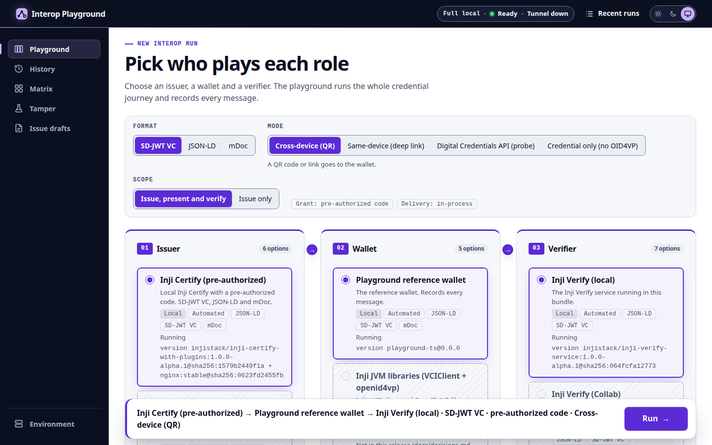
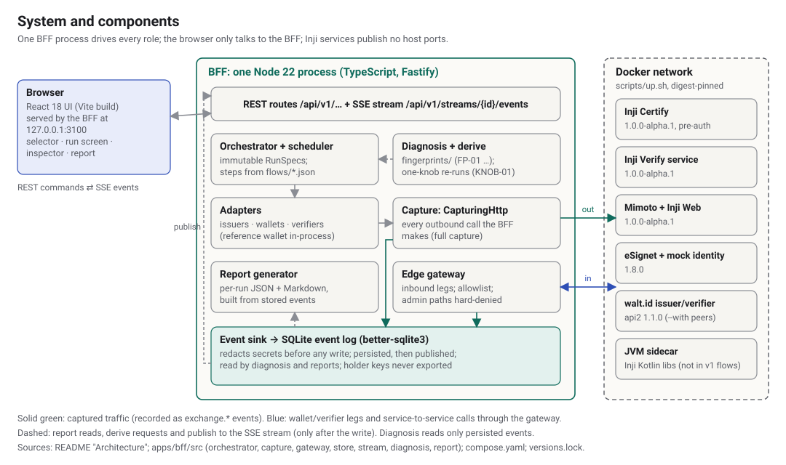

Interop Playground
Run Inji issuer → wallet → verifier combinations, see every message, and prove the fix for a failure with one changed setting.

Team Bhrinjal (Abhijay Jindal) · MOSIP Decode 2026, PS02 · https://github.com/abhijay-jindal-604/interop-playground
The problem
A failed presentation is one opaque error; the cause sits in a message two hops earlier.
ERR_SIGNATURE_VERIFICATION_FAILED"getX509CertChain(...) must not be null"
x5c chain in
its SD-JWT header, and Inji Verify requires one (gap G-55).
The solution
Pick three roles, run the real protocols, inspect every payload, get a report.
Two formats live: SD-JWT VC (dc+sd-jwt) and W3C VC JSON-LD
(ldp_vc). Verifier labels Valid, Invalid and
Valid-but-Expired.
How it works
One backend drives every role and records each exchange in an event log the UI replays.

The original angle: fix-it re-runs
We do not only diagnose: we prove the fix by re-running with exactly one change.
run
01M5B6KNNY7DC3YK3CR0ETNBN9
absent →
present. No button when the cause is uncertain.
run
01M5B6M723AQ7T818D36816PRV
"Changing only waltid.sdjwt.x5c from absent to present makes it pass."
Results (v1, 2026-10-20)
Every number below has a run ID or a test in the repository.
Technology stack
TypeScript backend and UI, real Inji services, every image pinned.
| Backend | Node 22, TypeScript, Fastify 5, better-sqlite3 event log |
|---|---|
| UI | React 18, Vite 7, React Router, Mermaid sequence diagrams, plain CSS tokens (light and dark) |
| Live data | REST commands, Server-Sent Events (no WebSocket); OpenAPI 3.1 contract |
| Protocols | OpenID4VCI 1.0, OpenID4VP 1.0 with DCQL, SD-JWT VC, W3C VC (JSON-LD) |
| Inji stack |
Inji Certify, Inji Verify, Mimoto, Inji Web 1.0.0-alpha.1; eSignet
1.8.0; walt.id 1.1.0 as an external peer
|
| Libraries | JVM sidecar (Gradle) with the Inji Kotlin libraries (built; not used by v1 flows) |
| Ops and tests |
Docker Compose, one scripts/up.sh, digests in
versions.lock; Vitest, Playwright, axe-core, GitHub Actions CI
|
Target audience
Anyone who has to make Inji work with something it did not ship with.
Potential impact, and run it yourself
Faster interop debugging today; a shared compatibility record next.
docs/gaps.md,
each with its evidence; filed upstream by hand.
A nightly cross-vendor matrix from the same runs. Not in v1.
More fingerprints and knobs, and fixes contributed upstream. Open source under MPL-2.0.
git clone https://github.com/abhijay-jindal-604/interop-playground →
scripts/up.sh → open http://127.0.0.1:3100. First Pass 3 min 1 s
after the clone (images cached). Docs: README.md,
docs/architecture.md, docs/design.md.
Team Bhrinjal (Abhijay Jindal).